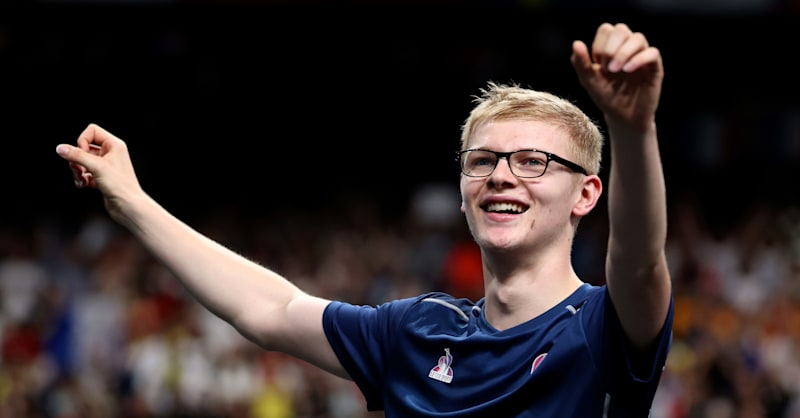

Felix Lebrun (Франция, 6659 очков).Биография. Родился 12 сентября 2006 года; вырос в Монпелье в теннисной семье: отец Стефан играл профессионально, старший брат Алексис — лидер сборной и чемпион Европы. Тренируется с трёх лет.
Стиль. Уникальная для Европы penhold‑хватка с мощным обратным бэкхендом; агрессивный, динамичный темп и мгновенная атака после подачи. Его скоростные розыгрыши и точность ударов делают его одним из самых зрелищных игроков тура.
Карьера. На домашней Олимпиаде‑2024 взял две бронзы — в одиночке (в матче за 3‑е место прошёл Уго Кальдерано) и в команде, став юнейшим олимпийским медалистом в этих разрядах и прервав 32‑летнее ожидание французской одиночной медали. Чемпион Евроигр‑2023 (юнейший в истории), золото ЧЕ в паре‑2024 и с командой‑2025. В августе 2026‑го выиграл Europe Smash, обыграв в финале Харимото, — первый француз‑победитель Grand Smash, после чего поднялся на №2. С братом взяли пару Singapore Smash‑2026.
Форма. Главный фаворит домашней публики и претендент на золото Олимпиады‑2028.